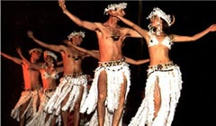

Los bailes típicos de la isla son en su mayoría de origen polinésico, especialmente de Samoa y Tahiti. El escritor y estudioso de nuestras tradiciones,
Oreste Plath, describió en su ensayo Folclor Chileno los bailes más destacados de Isla de Pascua que a continuación te presentamos.
Sau Sau
Esta danza es la más característica del folklor pascuense. Reina y centro de todas los encuentros y festividades, esta danza es de origen samoano e impregnó a la cultura de la Isla de Pascua desde 1940. El Sau Sau resalta la gracia, sensualidad y soltura de las mujeres que visten poca ropa y adornan sus figuras con plumas de colores. En la coreografía la pareja se acerca y aleja efectuando flexibles movimientos de caderas y manos.

El Hoko
Esta forma de baile es una de las representaciones artísticas más antiguas de Rapa Nui. Danza primitiva que se presenta más estática y posicional, ya que fija un centro de gravedad con el arcos de los pies; en este lugar se realizan ondulaciones del cuerpo, giros de las rodillas, mímica facial muy expresiva, acompañado de movimiento de ojos y de manos, imitando ligeramente a las aves y a los hombres.
Volver al Menu